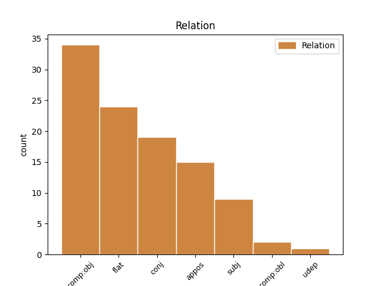
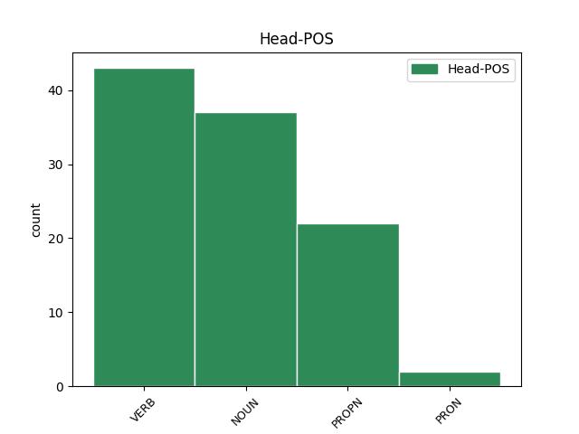
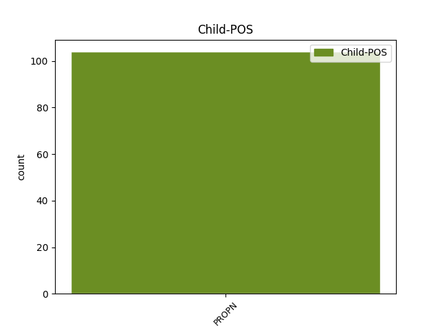

Distribution of features within this leaf



Agreement Rules sorted by frequency.
- When the dependent token is the flat multiword expression(flat) of the head token, and the dependent token is PROPN.
1 ad _ _ _ _ 0 _ _ _
2 primum _ _ _ _ 0 _ _ _
3 ergo _ _ _ _ 0 _ _ _
4 dicendum _ _ _ _ 0 _ _ _
5 quod _ _ _ _ 0 _ _ _
6 hoc _ _ _ _ 0 _ _ _
7 nomen nomen NOUN C1|grn1|casA|gen3 Case=Nom|Degree=Pos|Gender=Neut|Number=Sing 0 _ _ _
8 deus deus PROPN F1|grn1|casA|gen1 Case=Nom|Degree=Pos|Gender=Masc|Number=Sing 7 flat _ SpaceAfter=No
9 , _ _ _ _ 0 _ _ _
10 licet _ _ _ _ 0 _ _ _
11 conveniat _ _ _ _ 0 _ _ _
12 cum _ _ _ _ 0 _ _ _
13 terminis _ _ _ _ 0 _ _ _
14 singularibus _ _ _ _ 0 _ _ _
15 in _ _ _ _ 0 _ _ _
16 hoc _ _ _ _ 0 _ _ _
17 , _ _ _ _ 0 _ _ _
18 quod _ _ _ _ 0 _ _ _
19 forma _ _ _ _ 0 _ _ _
20 significata _ _ _ _ 0 _ _ _
21 non _ _ _ _ 0 _ _ _
22 multiplicatur _ _ _ _ 0 _ _ _
23 ; _ _ _ _ 0 _ _ _
24 convenit _ _ _ _ 0 _ _ _
25 tamen _ _ _ _ 0 _ _ _
26 cum _ _ _ _ 0 _ _ _
27 terminis _ _ _ _ 0 _ _ _
28 communibus _ _ _ _ 0 _ _ _
29 in _ _ _ _ 0 _ _ _
30 hoc _ _ _ _ 0 _ _ _
31 , _ _ _ _ 0 _ _ _
32 quod _ _ _ _ 0 _ _ _
33 forma _ _ _ _ 0 _ _ _
34 significata _ _ _ _ 0 _ _ _
35 invenitur _ _ _ _ 0 _ _ _
36 in _ _ _ _ 0 _ _ _
37 pluribus _ _ _ _ 0 _ _ _
38 suppositis _ _ _ _ 0 _ _ _
39 . _ _ _ _ 0 _ _ _
1 nec _ _ _ _ 0 _ _ _
2 differt _ _ _ _ 0 _ _ _
3 , _ _ _ _ 0 _ _ _
4 quantum _ _ _ _ 0 _ _ _
5 ad _ _ _ _ 0 _ _ _
6 hoc _ _ _ _ 0 _ _ _
7 , _ _ _ _ 0 _ _ _
8 sive _ _ _ _ 0 _ _ _
9 respondeat _ _ _ _ 0 _ _ _
10 passivo _ _ _ _ 0 _ _ _
11 principio _ _ _ _ 0 _ _ _
12 activum _ _ _ _ 0 _ _ _
13 principium _ _ _ _ 0 _ _ _
14 in _ _ _ _ 0 _ _ _
15 natura _ _ _ _ 0 _ _ _
16 respectu _ _ _ _ 0 _ _ _
17 ultimae _ _ _ _ 0 _ _ _
18 perfectionis _ _ _ _ 0 _ _ _
19 , _ _ _ _ 0 _ _ _
20 scilicet _ _ _ _ 0 _ _ _
21 formae _ _ _ _ 0 _ _ _
22 ; _ _ _ _ 0 _ _ _
23 sive _ _ _ _ 0 _ _ _
24 respectu _ _ _ _ 0 _ _ _
25 dispositionis _ _ _ _ 0 _ _ _
26 quae _ _ _ _ 0 _ _ _
27 est _ _ _ _ 0 _ _ _
28 necessitas _ _ _ _ 0 _ _ _
29 ad _ _ _ _ 0 _ _ _
30 formam _ _ _ _ 0 _ _ _
31 ultimam _ _ _ _ 0 _ _ _
32 , _ _ _ _ 0 _ _ _
33 sicut _ _ _ _ 0 _ _ _
34 est _ _ _ _ 0 _ _ _
35 in _ _ _ _ 0 _ _ _
36 generatione _ _ _ _ 0 _ _ _
37 hominis _ _ _ _ 0 _ _ _
38 secundum _ _ _ _ 0 _ _ _
39 positionem _ _ _ _ 0 _ _ _
40 fidei _ _ _ _ 0 _ _ _
41 ; _ _ _ _ 0 _ _ _
42 vel _ _ _ _ 0 _ _ _
43 etiam _ _ _ _ 0 _ _ _
44 de _ _ _ _ 0 _ _ _
45 omnibus _ _ _ _ 0 _ _ _
46 aliis _ _ _ _ 0 _ _ _
47 secundum _ _ _ _ 0 _ _ _
48 opinionem _ _ _ _ 0 _ _ _
49 platonis plato PROPN C1|grn1|casB|gen1 Case=Gen|Degree=Pos|Gender=Masc|Number=Sing 0 _ _ _
50 et _ _ _ _ 0 _ _ _
51 avicennae avicenna PROPN A1|grn1|casB|gen1 Case=Gen|Degree=Pos|Gender=Masc|Number=Sing 49 conj _ SpaceAfter=No
52 . _ _ _ _ 0 _ _ _
1 quamvis _ _ _ _ 0 _ _ _
2 autem _ _ _ _ 0 _ _ _
3 animabus _ _ _ _ 0 _ _ _
4 post _ _ _ _ 0 _ _ _
5 mortem _ _ _ _ 0 _ _ _
6 non _ _ _ _ 0 _ _ _
7 assignentur _ _ _ _ 0 _ _ _
8 aliqua _ _ _ _ 0 _ _ _
9 corpora _ _ _ _ 0 _ _ _
10 , _ _ _ _ 0 _ _ _
11 quorum _ _ _ _ 0 _ _ _
12 sint _ _ _ _ 0 _ _ _
13 formae _ _ _ _ 0 _ _ _
14 vel _ _ _ _ 0 _ _ _
15 determinati _ _ _ _ 0 _ _ _
16 motores _ _ _ _ 0 _ _ _
17 ; _ _ _ _ 0 _ _ _
18 determinantur _ _ _ _ 0 _ _ _
19 tamen _ _ _ _ 0 _ _ _
20 eis _ _ _ _ 0 _ _ _
21 quaedam _ _ _ _ 0 _ _ _
22 corporalia _ _ _ _ 0 _ _ _
23 loca _ _ _ _ 0 _ _ _
24 per _ _ _ _ 0 _ _ _
25 congruentiam _ _ _ _ 0 _ _ _
26 quamdam _ _ _ _ 0 _ _ _
27 secundum _ _ _ _ 0 _ _ _
28 gradus _ _ _ _ 0 _ _ _
29 dignitatis _ _ _ _ 0 _ _ _
30 eorum _ _ _ _ 0 _ _ _
31 , _ _ _ _ 0 _ _ _
32 in _ _ _ _ 0 _ _ _
33 quibus _ _ _ _ 0 _ _ _
34 sunt _ _ _ _ 0 _ _ _
35 quasi _ _ _ _ 0 _ _ _
36 in _ _ _ _ 0 _ _ _
37 loco _ _ _ _ 0 _ _ _
38 , _ _ _ _ 0 _ _ _
39 eo _ _ _ _ 0 _ _ _
40 modo _ _ _ _ 0 _ _ _
41 quo _ _ _ _ 0 _ _ _
42 incorporalia _ _ _ _ 0 _ _ _
43 in _ _ _ _ 0 _ _ _
44 loco _ _ _ _ 0 _ _ _
45 esse _ _ _ _ 0 _ _ _
46 possunt _ _ _ _ 0 _ _ _
47 , _ _ _ _ 0 _ _ _
48 secundum _ _ _ _ 0 _ _ _
49 quod _ _ _ _ 0 _ _ _
50 magis _ _ _ _ 0 _ _ _
51 accedent _ _ _ _ 0 _ _ _
52 ad _ _ _ _ 0 _ _ _
53 primam _ _ _ _ 0 _ _ _
54 substantiam substantia NOUN A1|grn1|casD|gen2|vgr1 Case=Acc|Degree=Pos|Gender=Fem|Number=Sing 0 _ _ _
55 ( _ _ _ _ 0 _ _ _
56 cui _ _ _ _ 0 _ _ _
57 locus _ _ _ _ 0 _ _ _
58 superior _ _ _ _ 0 _ _ _
59 per _ _ _ _ 0 _ _ _
60 congruentiam _ _ _ _ 0 _ _ _
61 deputatur _ _ _ _ 0 _ _ _
62 ) _ _ _ _ 0 _ _ _
63 scilicet _ _ _ _ 0 _ _ _
64 deum deus PROPN F1|grn1|casD|gen1 Case=Acc|Degree=Pos|Gender=Masc|Number=Sing 54 appos _ SpaceAfter=No
65 , _ _ _ _ 0 _ _ _
66 cujus _ _ _ _ 0 _ _ _
67 sedem _ _ _ _ 0 _ _ _
68 caelum _ _ _ _ 0 _ _ _
69 scriptura _ _ _ _ 0 _ _ _
70 esse _ _ _ _ 0 _ _ _
71 denuntiat _ _ _ _ 0 _ _ _
72 ; _ _ _ _ 0 _ _ _
1 cum _ _ _ _ 0 _ _ _
2 autem _ _ _ _ 0 _ _ _
3 omne _ _ _ _ 0 _ _ _
4 agens _ _ _ _ 0 _ _ _
5 agat _ _ _ _ 0 _ _ _
6 ad _ _ _ _ 0 _ _ _
7 proprium _ _ _ _ 0 _ _ _
8 finem _ _ _ _ 0 _ _ _
9 et _ _ _ _ 0 _ _ _
10 sibi _ _ _ _ 0 _ _ _
11 convenientem _ _ _ _ 0 _ _ _
12 , _ _ _ _ 0 _ _ _
13 impossibile _ _ _ _ 0 _ _ _
14 est _ _ _ _ 0 _ _ _
15 quod _ _ _ _ 0 _ _ _
16 , _ _ _ _ 0 _ _ _
17 deo deus PROPN F1|grn1|casF|gen1 Case=Abl|Degree=Pos|Gender=Masc|Number=Sing 18 subj _ _
18 agente ago VERB L2|modD|tem1|grp1|casF|gen1 Case=Abl|Degree=Pos|Gender=Masc|Number=Sing|Tense=Pres|VerbForm=Part|Voice=Act 0 _ _ _
19 , _ _ _ _ 0 _ _ _
20 aliqui _ _ _ _ 0 _ _ _
21 avertantur _ _ _ _ 0 _ _ _
22 ab _ _ _ _ 0 _ _ _
23 ultimo _ _ _ _ 0 _ _ _
24 fine _ _ _ _ 0 _ _ _
25 , _ _ _ _ 0 _ _ _
26 qui _ _ _ _ 0 _ _ _
27 deus _ _ _ _ 0 _ _ _
28 est _ _ _ _ 0 _ _ _
29 . _ _ _ _ 0 _ _ _
1 provide _ _ _ _ 0 _ _ _
2 de _ _ _ _ 0 _ _ _
3 omni _ _ _ _ 0 _ _ _
4 plebe _ _ _ _ 0 _ _ _
5 viros _ _ _ _ 0 _ _ _
6 sapientes _ _ _ _ 0 _ _ _
7 et _ _ _ _ 0 _ _ _
8 timentes timeo VERB K2|modD|tem1|grp1|casM|gen1 Case=Acc|Degree=Pos|Gender=Masc|Number=Plur|Tense=Pres|VerbForm=Part|Voice=Act 0 _ _ _
9 deum deus PROPN F1|grn1|casD|gen1 Case=Acc|Degree=Pos|Gender=Masc|Number=Sing 8 comp:obj _ SpaceAfter=No
10 , _ _ _ _ 0 _ _ _
11 qui _ _ _ _ 0 _ _ _
12 iudicent _ _ _ _ 0 _ _ _
13 populum _ _ _ _ 0 _ _ _
14 omni _ _ _ _ 0 _ _ _
15 tempore _ _ _ _ 0 _ _ _
16 . _ _ _ _ 0 _ _ _
Disagree Examples:
1 fidelis _ _ _ _ 0 _ _ _
2 autem _ _ _ _ 0 _ _ _
3 ea _ _ _ _ 0 _ _ _
4 solum _ _ _ _ 0 _ _ _
5 considerat _ _ _ _ 0 _ _ _
6 circa _ _ _ _ 0 _ _ _
7 creaturas _ _ _ _ 0 _ _ _
8 quae _ _ _ _ 0 _ _ _
9 eis _ _ _ _ 0 _ _ _
10 conveniunt _ _ _ _ 0 _ _ _
11 secundum _ _ _ _ 0 _ _ _
12 quod _ _ _ _ 0 _ _ _
13 sunt _ _ _ _ 0 _ _ _
14 ad _ _ _ _ 0 _ _ _
15 deum _ _ _ _ 0 _ _ _
16 relata _ _ _ _ 0 _ _ _
17 : _ _ _ _ 0 _ _ _
18 utpote _ _ _ _ 0 _ _ _
19 , _ _ _ _ 0 _ _ _
20 quod _ _ _ _ 0 _ _ _
21 sunt _ _ _ _ 0 _ _ _
22 a _ _ _ _ 0 _ _ _
23 deo _ _ _ _ 0 _ _ _
24 creata _ _ _ _ 0 _ _ _
25 , _ _ _ _ 0 _ _ _
26 quod _ _ _ _ 0 _ _ _
27 sunt _ _ _ _ 0 _ _ _
28 deo deus PROPN F1|grn1|casC|gen1 Case=Dat|Degree=Pos|Gender=Masc|Number=Sing 29 comp:obj _ _
29 subiecta subicio VERB L2|modM|tem4|grp1|casJ|gen3|vgr2 Aspect=Perf|Case=Nom|Degree=Pos|Gender=Neut|Number=Plur|Tense=Past|VerbForm=Part|Voice=Pass 0 _ _ _
30 , _ _ _ _ 0 _ _ _
31 et _ _ _ _ 0 _ _ _
32 huiusmodi _ _ _ _ 0 _ _ _
33 . _ _ _ _ 0 _ _ _
1 quae _ _ _ _ 0 _ _ _
2 per _ _ _ _ 0 _ _ _
3 liberum _ _ _ _ 0 _ _ _
4 arbitrium _ _ _ _ 0 _ _ _
5 diversimode _ _ _ _ 0 _ _ _
6 sunt _ _ _ _ 0 _ _ _
7 motae _ _ _ _ 0 _ _ _
8 , _ _ _ _ 0 _ _ _
9 quaedam _ _ _ _ 0 _ _ _
10 adhaerentes adhaereo VERB K2|modD|tem1|grp1|casJ|gen2|vgr1 Case=Nom|Degree=Pos|Gender=Fem|Number=Plur|Tense=Pres|VerbForm=Part|Voice=Act 0 _ _ _
11 deo deus PROPN F1|grn1|casC|gen1 Case=Dat|Degree=Pos|Gender=Masc|Number=Sing 10 comp:obj _ _
12 plus _ _ _ _ 0 _ _ _
13 vel _ _ _ _ 0 _ _ _
14 minus _ _ _ _ 0 _ _ _
15 , _ _ _ _ 0 _ _ _
16 quaedam _ _ _ _ 0 _ _ _
17 ab _ _ _ _ 0 _ _ _
18 eo _ _ _ _ 0 _ _ _
19 recedentes _ _ _ _ 0 _ _ _
20 vel _ _ _ _ 0 _ _ _
21 magis _ _ _ _ 0 _ _ _
22 vel _ _ _ _ 0 _ _ _
23 minus _ _ _ _ 0 _ _ _
24 ; _ _ _ _ 0 _ _ _
1 si _ _ _ _ 0 _ _ _
2 igitur _ _ _ _ 0 _ _ _
3 deus _ _ _ _ 0 _ _ _
4 animam _ _ _ _ 0 _ _ _
5 in _ _ _ _ 0 _ _ _
6 esse _ _ _ _ 0 _ _ _
7 produceret _ _ _ _ 0 _ _ _
8 , _ _ _ _ 0 _ _ _
9 corpus _ _ _ _ 0 _ _ _
10 vero _ _ _ _ 0 _ _ _
11 virtute _ _ _ _ 0 _ _ _
12 seminis _ _ _ _ 0 _ _ _
13 formaretur _ _ _ _ 0 _ _ _
14 , _ _ _ _ 0 _ _ _
15 quae _ _ _ _ 0 _ _ _
16 duo _ _ _ _ 0 _ _ _
17 sunt _ _ _ _ 0 _ _ _
18 partes _ _ _ _ 0 _ _ _
19 unius _ _ _ _ 0 _ _ _
20 , _ _ _ _ 0 _ _ _
21 scilicet _ _ _ _ 0 _ _ _
22 hominis _ _ _ _ 0 _ _ _
23 , _ _ _ _ 0 _ _ _
24 utriusque _ _ _ _ 0 _ _ _
25 operatio operatio NOUN C1|grn1|casA|gen2|vgr1 Case=Nom|Degree=Pos|Gender=Fem|Number=Sing 0 _ _ _
26 , _ _ _ _ 0 _ _ _
27 scilicet _ _ _ _ 0 _ _ _
28 dei deus PROPN F1|grn1|casB|gen1 Case=Gen|Degree=Pos|Gender=Masc|Number=Sing 25 appos _ _
29 et _ _ _ _ 0 _ _ _
30 seminativae _ _ _ _ 0 _ _ _
31 virtutis _ _ _ _ 0 _ _ _
32 , _ _ _ _ 0 _ _ _
33 imperfecta _ _ _ _ 0 _ _ _
34 videretur _ _ _ _ 0 _ _ _
35 . _ _ _ _ 0 _ _ _
1 et _ _ _ _ 0 _ _ _
2 ideo _ _ _ _ 0 _ _ _
3 forte _ _ _ _ 0 _ _ _
4 suprema _ _ _ _ 0 _ _ _
5 intellectualis _ _ _ _ 0 _ _ _
6 substantia _ _ _ _ 0 _ _ _
7 creata _ _ _ _ 0 _ _ _
8 habet _ _ _ _ 0 _ _ _
9 pro _ _ _ _ 0 _ _ _
10 intelligibili _ _ _ _ 0 _ _ _
11 optimo _ _ _ _ 0 _ _ _
12 illud _ _ _ _ 0 _ _ _
13 quod _ _ _ _ 0 _ _ _
14 est _ _ _ _ 0 _ _ _
15 optimum _ _ _ _ 0 _ _ _
16 simpliciter _ _ _ _ 0 _ _ _
17 , _ _ _ _ 0 _ _ _
18 unde _ _ _ _ 0 _ _ _
19 eius _ _ _ _ 0 _ _ _
20 felicitas _ _ _ _ 0 _ _ _
21 erit _ _ _ _ 0 _ _ _
22 in _ _ _ _ 0 _ _ _
23 intelligendo intellego VERB L2|modE|grp1|casF Case=Abl|Degree=Pos|Number=Sing|VerbForm=Ger|Voice=Act 0 _ _ _
24 deum deus PROPN F1|grn1|casD|gen1 Case=Acc|Degree=Pos|Gender=Masc|Number=Sing 23 comp:obj _ SpaceAfter=No
25 : _ _ _ _ 0 _ _ _
1 quia _ _ _ _ 0 _ _ _
2 vero _ _ _ _ 0 _ _ _
3 intellectualis _ _ _ _ 0 _ _ _
4 substantia _ _ _ _ 0 _ _ _
5 sua _ _ _ _ 0 _ _ _
6 operatione _ _ _ _ 0 _ _ _
7 pertingit _ _ _ _ 0 _ _ _
8 ad _ _ _ _ 0 _ _ _
9 deum _ _ _ _ 0 _ _ _
10 non _ _ _ _ 0 _ _ _
11 solum _ _ _ _ 0 _ _ _
12 intelligendo _ _ _ _ 0 _ _ _
13 , _ _ _ _ 0 _ _ _
14 sed _ _ _ _ 0 _ _ _
15 etiam _ _ _ _ 0 _ _ _
16 per _ _ _ _ 0 _ _ _
17 actum _ _ _ _ 0 _ _ _
18 voluntatis _ _ _ _ 0 _ _ _
19 , _ _ _ _ 0 _ _ _
20 desiderando _ _ _ _ 0 _ _ _
21 et _ _ _ _ 0 _ _ _
22 amando _ _ _ _ 0 _ _ _
23 ipsum _ _ _ _ 0 _ _ _
24 et _ _ _ _ 0 _ _ _
25 in _ _ _ _ 0 _ _ _
26 ipso _ _ _ _ 0 _ _ _
27 delectationem _ _ _ _ 0 _ _ _
28 habendo _ _ _ _ 0 _ _ _
29 , _ _ _ _ 0 _ _ _
30 potest _ _ _ _ 0 _ _ _
31 alicui _ _ _ _ 0 _ _ _
32 videri _ _ _ _ 0 _ _ _
33 quod _ _ _ _ 0 _ _ _
34 ultimus _ _ _ _ 0 _ _ _
35 finis _ _ _ _ 0 _ _ _
36 , _ _ _ _ 0 _ _ _
37 et _ _ _ _ 0 _ _ _
38 ultima _ _ _ _ 0 _ _ _
39 hominis _ _ _ _ 0 _ _ _
40 felicitas _ _ _ _ 0 _ _ _
41 , _ _ _ _ 0 _ _ _
42 non _ _ _ _ 0 _ _ _
43 sit _ _ _ _ 0 _ _ _
44 in _ _ _ _ 0 _ _ _
45 cognoscendo cognosco VERB L2|modE|grp1|casF Case=Abl|Degree=Pos|Number=Sing|VerbForm=Ger|Voice=Act 0 _ _ _
46 deum deus PROPN F1|grn1|casD|gen1 Case=Acc|Degree=Pos|Gender=Masc|Number=Sing 45 comp:obj _ SpaceAfter=No
47 , _ _ _ _ 0 _ _ _
48 sed _ _ _ _ 0 _ _ _
49 magis _ _ _ _ 0 _ _ _
50 in _ _ _ _ 0 _ _ _
51 amando _ _ _ _ 0 _ _ _
52 , _ _ _ _ 0 _ _ _
53 vel _ _ _ _ 0 _ _ _
54 aliquo _ _ _ _ 0 _ _ _
55 alio _ _ _ _ 0 _ _ _
56 actu _ _ _ _ 0 _ _ _
57 voluntatis _ _ _ _ 0 _ _ _
58 se _ _ _ _ 0 _ _ _
59 habendo _ _ _ _ 0 _ _ _
60 ad _ _ _ _ 0 _ _ _
61 ipsum _ _ _ _ 0 _ _ _
62 : _ _ _ _ 0 _ _ _